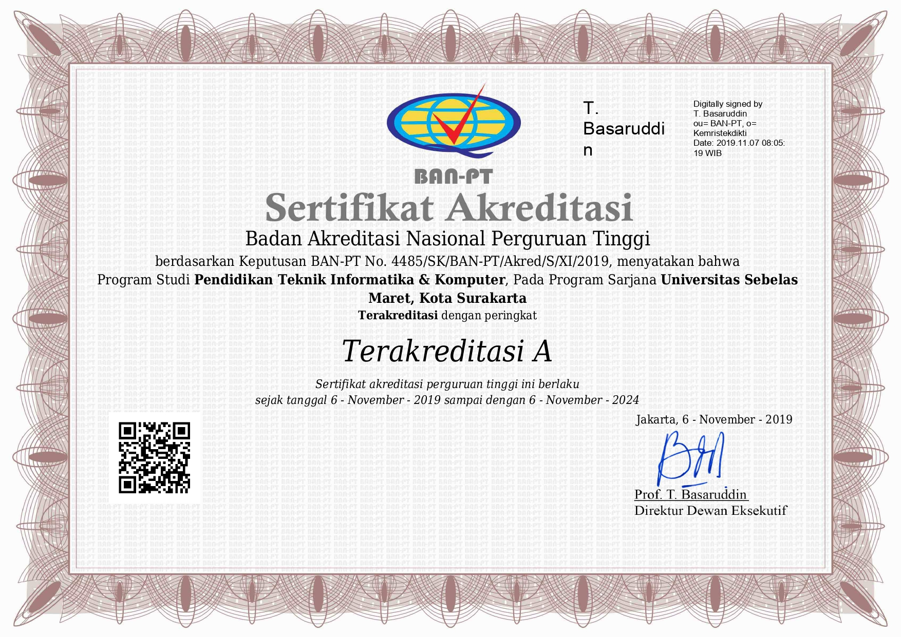

Study Program Accreditation
Based on the SK BAN-PT NUMBER: 4485/SK/BAN-PT/Akred/S/XI/2019, the Informatics and Computer Engineering Education Study Program UNS has been accredited with an A rating. The following are supporting documents for evidence of accreditation starting from 6 November 2019 to 6 November 2024.
